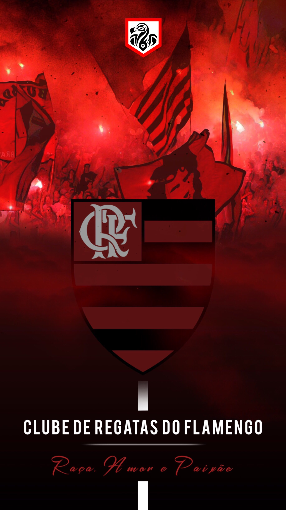
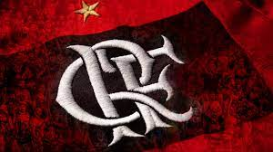

Títulos
Ídolos
Situação Atual
Clube de Regatas do Flamengo

O Flamengo foi fundado em 17 de novembro de 1895 para as disputas de remo.
A entrada da equipe no futebol aconteceu em 1912.
Atualmente, o time rubro-negro é o maior vencedor da história do Campeonato Carioca,
com 31 títulos. Segundo diversas pesquisas, é o clube com o maior número de torcedores do País.
Os dois principais títulos da história do Flamengo ocorreram em 1981.
Comandado pelo ídolo Zico, o time conquistou a Copa Libertadores da América, em final contra o Cobreloa, do Chile,
e o Mundial Interclubes, diante do Liverpool, da Inglaterra.
Foi na década de 1980, também, que o Flamengo conquistou o seu primeiro Campeonato Brasileiro.
